数据帧的构造
数据帧是一种用于数据传输的数据格式，用于将数据打包成一个整体，以便于传输。数据帧通常包括帧头、数据、校验位和帧尾。帧头和帧尾用于标识数据帧的开始和结束，校验位用于校验数据的完整性。数据帧的构造是将数据打包成一个整体的过程，通常包括数据的格式化、校验和拼接。
注：数据帧为计算机网络通信的基本概念，仅作为方便理解，并非完全符合相关定义。
在 armTool 中，数据帧的构造由armStruct类实现。
数据帧格式

详细说明见：数据帧格式
armStruct 类
构造方法
方法原型：__init__(self, pose: armPose)
在构造数据帧时，需要机械臂姿态的有关信息，因此在构造方法中传入armPose类的实例。
其中self.target_pose为机械臂姿态信息，self.pose_list为数据帧的数据部分。
并且在构造数据帧时，为避免溢出错误和进行角度制度转换，声明了两个匿名函数。
self.fix_negative_overflow = lambda x: x + 70
self.radian_to_angle = lambda radian: radian * 180.0 / math.pi
其中self.fix_negative_overflow用于修正负数溢出，self.radian_to_angle用于将弧度转换为角度。
安全角度检查方法
方法原型：safety_check(self)
在构造数据帧时，需要对数据进行安全检查，以确保数值在合理范围内。
各个电机的安全范围，目前由经验设定，如下：
| 电机名称 | 变量名称 | 安全范围 |
|---|---|---|
| 滑台 | platform |
±140mm |
| 一号电机 | joint_0 |
0° ~ 180° |
| 二号电机 | joint_1 |
0° ~ 180° |
| 三号电机 | joint_2 |
0° ~ 180° |
| 四号电机 | joint_3 |
0° ~ 180° |
电机旋转正方向等相关信息见：机械臂结构
如果数据超出安全范围，则抛出异常[TIPS] XXX (12.34) out of range [1, 10]。（XXX 为电机变量名称，12.34 为当前值，1 为下限，10 为上限）
if not (-140 < self.target_pose.plat_move() < 140):
raise Exception(
"\033[0;34m[TIPS] Platform ({}) out of range ({}, {}).\033[0m".format(
self.target_pose.plat_move(), - 140, 140
)
)
if not (0 <= self.target_pose.joint_0 <= pi):
raise Exception(
"\033[0;34m[TIPS] Joint 0 ({}) out of range [{}, {}].\033[0m".format(
self.target_pose.joint_0,0,pi
)
)
if not (0 <= self.target_pose.joint_1 <= pi / 30):
raise Exception(
"\033[0;34m[TIPS] Joint 1 ({}) out of range [{}, {}].\033[0m".format(
self.target_pose.joint_1,0,pi / 30
)
)
if not (0 <= self.target_pose.joint_2 <= pi):
raise Exception(
"\033[0;34m[TIPS] Joint 2 ({}) out of range [{}, {}].\033[0m".format(
self.target_pose.joint_2, 0, 3 * pi / 4
)
)
if not (0 <= self.target_pose.joint_3 <= pi):
raise Exception(
"\033[0;34m[TIPS] Joint 3 ({}) out of range [{}, {}].\033[0m".format(
self.target_pose.joint_3,0,pi
)
)
姿态数据构造方法
方法原型：pose_data(self)
在构造数据帧前，先将机械臂姿态信息进行变换，使得其能用 2 位 16 进制表示。
pose_format = "B B " + "B " * 6
plat_move_transform = lambda x: int(self.fix_negative_overflow(x / 100))
joint_transform = lambda x: int(
self.fix_negative_overflow(self.radian_to_angle(x))
)
gripper_transform = lambda x: int(self.fix_negative_overflow(x.value))
self.pose_list = (
plat_move_transform(self.target_pose.plat_move()),
joint_transform(self.target_pose.joint_0),
joint_transform(self.target_pose.joint_1),
joint_transform(self.target_pose.joint_2),
joint_transform(self.target_pose.joint_3),
gripper_transform(self.target_pose.gripper),
)
其中pose_format为数据格式，plat_move_transform、joint_transform、gripper_transform为数据转换函数。
利用struct模块将机械臂姿态信息转换为二进制数据流。如果在转换过程中出现异常，则抛出异常[ERRO] Pose data transform failed!。并返回 struct 模块的报错信息。
try:
pose_data = struct.pack(pose_format, 0x01, 0x06, *self.pose_list)
return pose_data
except Exception as e:
print(
"\033[0;34m[TIPS] Ubyte format requires 0 <= number <= 255, But poselist is {}.\033[0m".format(
self.pose_list
)
)
print(e)
raise Exception("\033[0;31m[ERRO] Data format error!\033[0m")

校验位计算方法
方法原型：parity_check(self, data: bytes)
在构造数据帧时，需要对数据进行校验，以确保数据的完整性，具体校验方法见数据含义——校验位。
数据帧构造方法
方法原型：packet_message(self)
完成数据帧的构造，拼接帧头、ID、数据长度、数据、校验位和帧尾。
调用流程如下：

调试方法
show_message(self)：用于打印数据帧的内容，以十六进制的格式。show_target_pose(self)：用于打印机械臂的目标姿态信息。